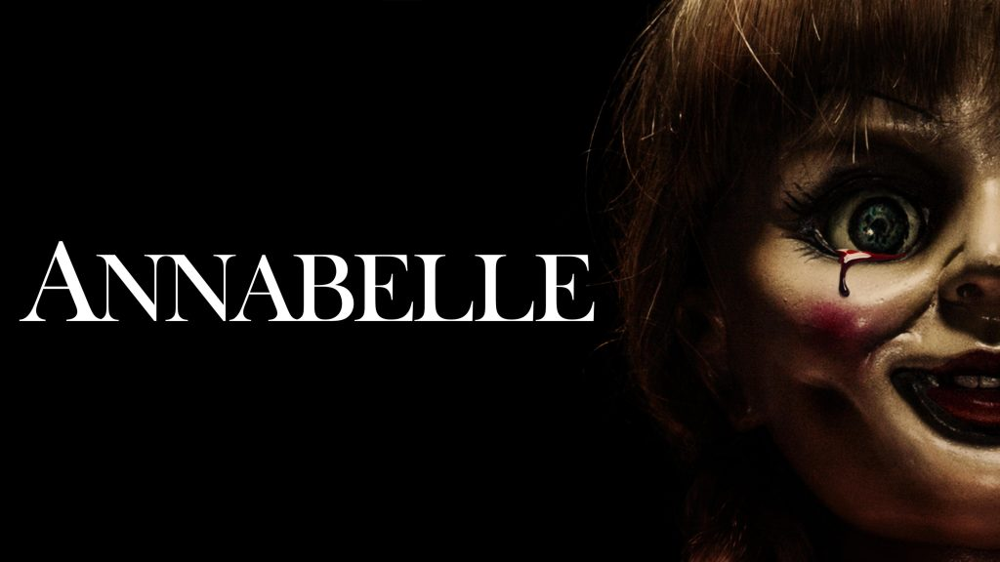

Annabelle
John Form (Ward Horton) thinks he's found the perfect gift for his expectant wife,
Mia (Annabelle Wallis) : a vintage doll in a beautiful white dress.
However, the couple's delight doesn't last long: One terrible night,
devil worshippers invade their home and launch a violent attack against the couple.
When the cultists try to summon a demon, they smear a bloody rune on the nursery wall and drip blood on Mia's doll,
thereby turning the former object of beauty into a conduit for ultimate evil.
play